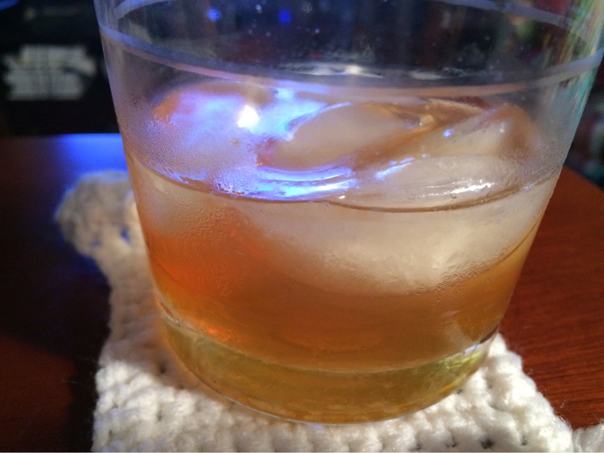

Ilios
Honey Simple Syrup 1:1
Bitters
Cointreau
Bulleit Rye or Four Roses Bourbon
Orange Peel Garnish
Coat bottom of glass with honey simple syrup
Add three dashes bitters
Add ice
Add 1/4 oz cointreau
Add 2 oz rye/bourbon
Stir to mix, then twist an orange peel over top, rub around rim of glass, and drop in
Source: Inspired by Stella's Richmond